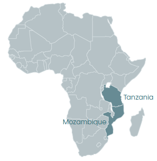

Malaria-transmitting mosquitoes kill more than 400,000 people every year
Vector control, the most effective strategy to reduce and prevent malaria transmission is now challenged by widespread insecticide resistance and mosquitoes that avoid insecticides in bednets and indoor residual spraying by biting outdoors or feeding upon animals.
The BOHEMIA (Broad One Health Endectocide-based Malaria Intervention in Africa) project aims to reduce malaria transmission by administering ivermectin to humans and livestock. Ivermectin is an endectocide, a drug with excellent safety profile that can kill ecto- and endoparasites, as well as mosquitoes that feed on treated humans or animals. The four-year project will conduct two clinical trials in Tanzania and Mozambique where ivermectin will be distributed in mass drug administration campaigns, for two consecutive years, in order to kill the mosquitoes that transmit malaria.
The Bohemia project will specifically seek to:
- Generate evidence on the impact of ivermectin MDA on malaria infection in humans, on mosquito populations, and on the environment, as well as on its safety and acceptability by communities.
- Support policy and translation of ivermectin as a potential vector control strategy for malaria impact.
- Engage and brief generics manufacturers as key partners for malaria intervention.
Learn more at www.bohemiaconsortium.org
The Consortium
The Barcelona Institute for Global Health (ISGlobal) will lead a consortium that includes:
- The Centro de Investigação em Saúde de Manhiça (CISM)
- The Ifakara Health Institute (IHI)
- Inselspital, BernUniversity Hospital
- The University of Oxford
- Virginia Tech